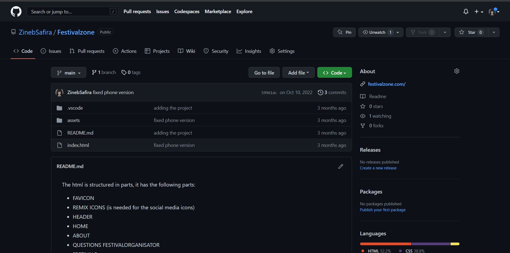

Manage & Control
In dit portfolio-item presenteer ik alle tools en methoden die ik heb gebruikt voor dit project. Tijdens de afgelopen maanden heb ik veel nieuwe vaardigheden geleerd door met deze tools te werken.
Visual Studio Code
Tijdens mijn stage heb ik mijn voorkeur gegeven aan Visual Studio Code als code-editor. Dit is een uitstekende en veelgebruikte code-editor ontwikkeld door Microsoft, beschikbaar voor verschillende besturingssystemen. Ik heb het al een paar semesters met succes gebruikt en ben zeer tevreden met zijn prestaties. In mijn stage was het vooral handig om Visual Studio Code te gebruiken, aangezien ik vanuit de opdrachtgever moest werken met html, css en javascript. Aangezien ik al bekend was met deze code-editor, was het de beste keuze voor mij. Ik zal het blijven gebruiken voor toekomstige projecten.
Trello
Gedurende het project heb ik Trello gebruikt als mijn belangrijkste projectbeheer tool. Dit is een uitstekende en veelgebruikte tool, die ik heb gebruikt om mijn taken en deadlines bij te houden. Het was vooral handig om Trello te gebruiken, omdat het mij in staat stelde om mijn werk visueel te organiseren en samen te werken met mijn teamleden. Ik heb Trello ook gebruikt om feedback te ontvangen van de opdrachtgever en om mijn vorderingen bij te houden. Ik ben zeer tevreden met Trello en zal het blijven gebruiken voor toekomstige projecten.
Github
GitHub heeft een beperkte rol gespeeld in mijn project, voornamelijk als het gaat om versiebeheer. Het was ook handig om GitHub te gebruiken, omdat het de opdrachtgevers toegang gaf tot de code en de vorderingen van het project.
FileZilla
GitHub heeft in eerste instantie gediend als het platform voor versiebeheer voor dit project. Echter, na overleg met mijn begeleider werd besloten om FileZilla te gebruiken in plaats daarvan. FileZilla stelt mij in staat om mijn werk in een gedeelde map te plaatsen, waar mijn begeleider toegang toe heeft om het te beoordelen. Helaas heb ik op dit moment geen toegang meer tot deze map, dus ik kan niet laten zien hoe de versies eruit zagen. Hoe dan ook, ik ben blij met de beslissing om FileZilla te gebruiken en heb ervaren dat het een nuttig hulpmiddel was voor het beheren van de versies van mijn werk.
Figma
Tijdens het project heb ik Figma als mijn belangrijkste design tool gebruikt. Dit is een zeer effectief en populaire tool, die ik heb ingezet voor het maken en beheren van mijn designs. Het was vooral nuttig om Figma te gebruiken vanwege de visuele organisatie van mijn werk en de mogelijkheid om samen te werken met mijn teamleden. Bovendien heb ik Figma gebruikt om feedback te ontvangen van de opdrachtgever en om mijn vorderingen bij te houden. Ik ben zeer tevreden met Figma en zal het blijven gebruiken voor toekomstige projecten.